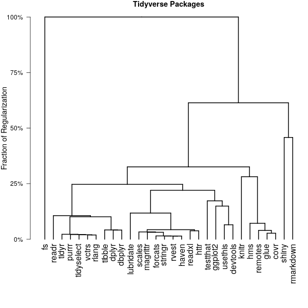

Clustering Contributors to the Tidyverse
Michael Weylandt
The tidyverse is a popular collection of R packages for data science packages. The tidyverse has a large contributor base, with several major contributors sponsored by RStudio, and many more who contribute in their free time. While anyone is welcome to contribute to any tidyverse package, repeat contributors typically find a niche and focus their contribution on a smaller number of closely-related packages. For example, some contributors may choose to focus their efforts on low-level OS-facing packages, such as fs, or on higher-level data manipulation packages, such as dplyr or tidyr. In this note, we examine the contribution patterns of several leading tidyverse contributors, with an eye towards grouping contributors by the packages to which they contribute. Code supporting this analysis is available at TODO.

This plot shows the contribution patterns of leading tidyverse contributors, visualized along the first two principal components. On first inspection, it is clear that Hadley Wickham (far right) is sui generis among the tidyverse developers. Since Hadley was the original developer of the tidyverse and remains the most active committer to half the packages considered, this is not surprising. Similarly, Jim Hester and Kirill Mueller, who focus on lower-level (OS-facing) packages such as fs and DBI are well-separated from the main body of developers.
If we omit these three and zoom in on the remaining developers, we see several additional patterns:
- There is a cluster of developers who actually mainly contribute to the libuv library and whose contributions to the tidyverse are ancillary to their main work.
- developers of the
tidyeval framework are somewhat removed from other tidyverse developers. - The RStudio employees focused on RStudio's core packages (the RStudio IDE, rmarkdown, shiny) are nicely clustered together.
Data
We focus our analysis on those packages in the tidyverse and r-lib organizations on GitHub, as well as selected packages from the rstudio organization which, while not strictly part of the tidyverse, are commonly associated with it. This gives a total of 30 packages.
To measure contributor activity, we examine the git history of each project, counting the number of commits in each repo from a given email address. (Where possible, multiple emails for the same user were combined after manual inspection.) We identify significant contributors as those who have more than 80 commits across all projects considered and discard less frequent contributors. Finally, the contribution counts are log-transformed to limit the effect of certain particularly active contributors. This yields a set of 33 leading contributors.
Note that code contributions are not the only means of contributing to the tidyverse, but they are the most easily tied to specific packages and among the easiest to access programmatically, so we restrict our attention to commit counts.
Methods
Our goal of grouping together tidyverse contributors suggests the use of a clustering method. While many clustering methods have been proposed, we will use a form of clustering known as convex clustering, defined by the following optimization problem: $$\hat{U}_{\lambda} = \text{argmin}_{U} \frac{1}{2}\|X - U\|_F^2 + \lambda \sum_{1 \leq i < j \leq n} \|U_{i\cdot} - U_{j\cdot}\|_q.$$ This can be interpreted as trying to satisfy two natural goals: we want to estimate cluster centroids \(U\) which are close to the original data \(X\), while also being fused together, resulting in genuine clusters. The trade-off between these two conflicting goals is controlled by the regularization parameter \(\lambda\). To perform convex clustering, we use the recently-released clustRviz, which provides an efficient implementation of convex clustering based upon a novel algorithmic regularization scheme.
Convex clustering has two properties that make it an attractive alternative to classical clustering methods:
- It is based on a
convex optimization problem, allowing a globally optimal solution to be found efficiently. - Instead of providing a single clustering, it yields a smoothly varying set of estimated clusters as \(\lambda\) increases.
Additional Results
By examining the fusion patterns of the convex clustering path, we can build a convex clustering dendrogram of the tidyverse devs:
The high-level information is essentially the same as shown above, but the lower level structure is somewhat more easy to visualize here.
If we cluster packages by their developer profile (as opposed to clustering developers by their packages), we obtain the following dendrogram: 
As before, we see evidence of splits between low level packages such as fs, RStudio flagship packages, and the bulk of the tidyverse.
Not surprisingly, we also see that development-based packages such as devtools, testthat, and usethis are clustered together.
Come gather ’round Tidiers Wherever you roam And admit that the packages Around you have grown And accept it that soon You’ll be drenched to the bone If your time to you is worth savin’ Then you better start testin’ or you’ll sink like a stone For the code, it is a-changin’